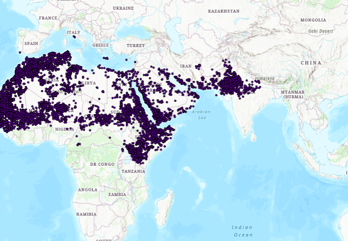

{% extends "layouts/layout.html" %}

{% block header %}
        <!--? Hero Start -->
        <div class="slider-area ">
            <div class="slider-height2 d-flex align-items-center">
                <div class="container">
                    <div class="row">
                        <div class="col-xl-12">
                            <div class="hero-cap hero-cap2 text-center">
                                <h2>Dashboard</h2>
                            </div>
                        </div>
                    </div>
                </div>
            </div>
        </div>
        <!-- Hero End -->
        <!-- all-course Start -->
        <section class="section-padding30">
            <div class="container">
            	<div class="row justify-content-md-center">
            		<div class="col-md">
                        <iframe
    allow="microphone;"
    width="400"
    height="430"
    src="https://console.dialogflow.com/api-client/demo/embedded/c73e89c4-096e-490b-8862-9f3d7c758bc8">
</iframe>
                    </div>
            		<div class="col-lg"><iframe src="//www.africanews.com/embed/timeline" scrolling="yes" frameborder="1" style="min-height:425px; width:100%; height:100%;"></iframe></div>
            	</div>
            	<div class="row ">
                    <div class="col-md">
                        <iframe src="https://anush-projects.herokuapp.com/" frameborder="1" height="500px" width="500px"></iframe>
                    </div>
            		<div class="col-lg">
                        <a href="/map">
                        
                    </a>
                    </div>
            	</div>
            </div>
        </section>
        <!-- all-course End -->
   <!-- Scroll Up -->
    <div id="back-top" >
        <a title="Go to Top" href="#"> <i class="fas fa-level-up-alt"></i></a>
    </div>

    {% endblock %}

    {% block content %}
    
    {% endblock %}
    